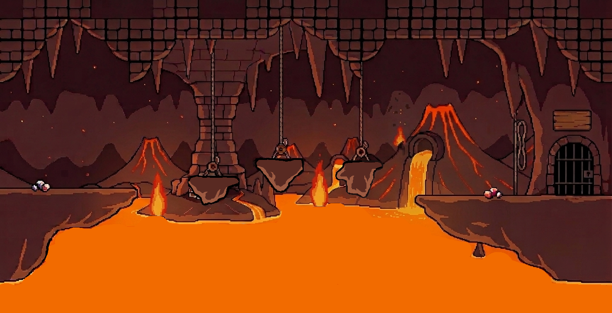
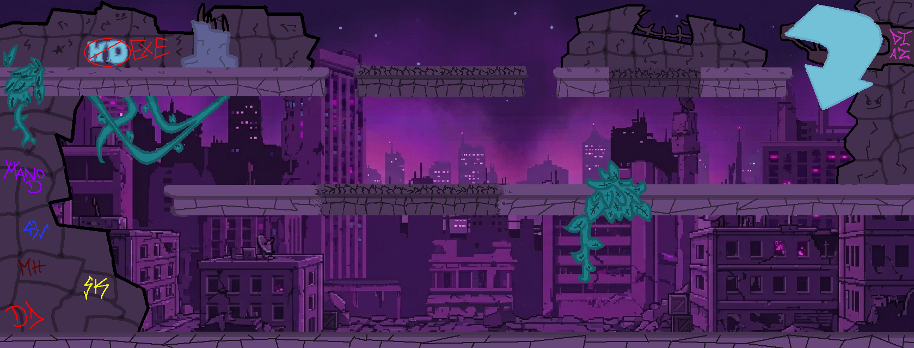
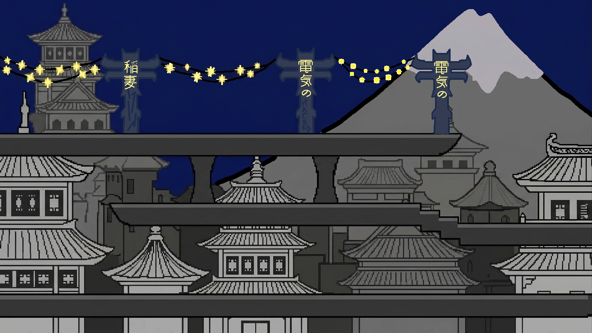

Um vírus chamado WIN.EXE se infiltrou no mundo digital e corrompeu suas configurações. Agora Dinux precisa atravessar três regiões devastadas. A Zona dos Coolers, o Distrito do HD e a Central de Energia, para restaurar o sistema antes que seja tarde demais.
Dinux é um arquivo antigo que vive num mundo distante do mundo dos arquivos novos e atualizados. Anos atrás, ele foi considerado um herói, sempre se adaptando às constantes atualizações daquele universo digital.
Com o tempo, Dinux passou a acreditar que sua proteção não era mais necessária. Afinal, o firewall e o antivírus já cuidavam de tudo. Ele se acomodou, deixando a vigilância de lado.
Até que, um dia, um vírus consegue driblar as defesas e se infiltrar no mundo: WIN.EXE. Assim que se instala, ele começa a corromper as configurações de tudo ao redor.
Na Zona dos Coolers, as temperaturas sobem descontroladamente e o calor toma conta do ambiente. No Distrito do HD (a região mais tecnológica do mundo) tudo se torna um local abandonado e envelhecido. E na Central de Energia, a última linha de defesa, a energia começa a faltar enquanto raios descontrolados caem sobre a cidade.
Agora, Dinux precisa deixar a acomodação para trás e atravessar essas três regiões corrompidas para recuperar os recursos perdidos e derrotar WIN.EXE de uma vez por todas.
O núcleo central do computador.

Circuitos, blocos de dados e regiões instáveis do sistema.

escrver detalhes da fase 3

Ferramentas utilizadas no projeto: